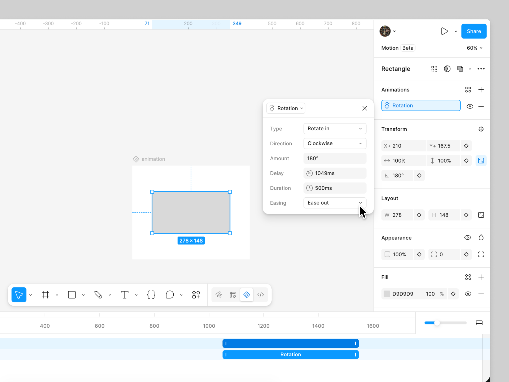
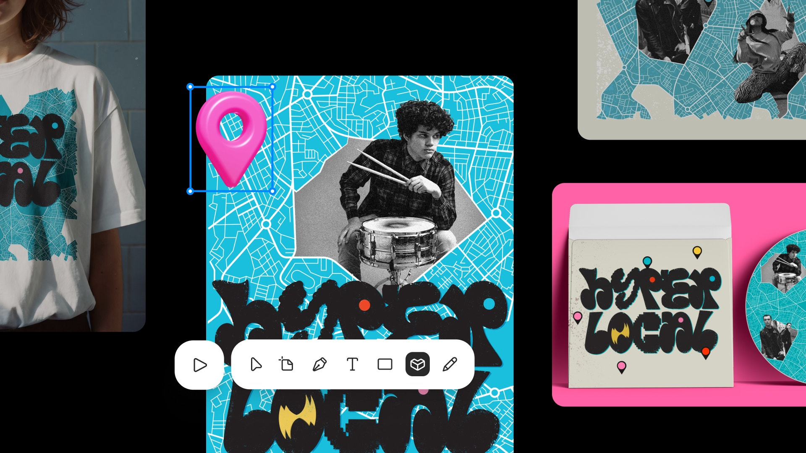
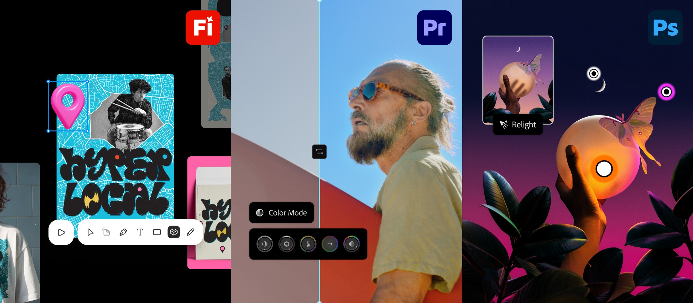
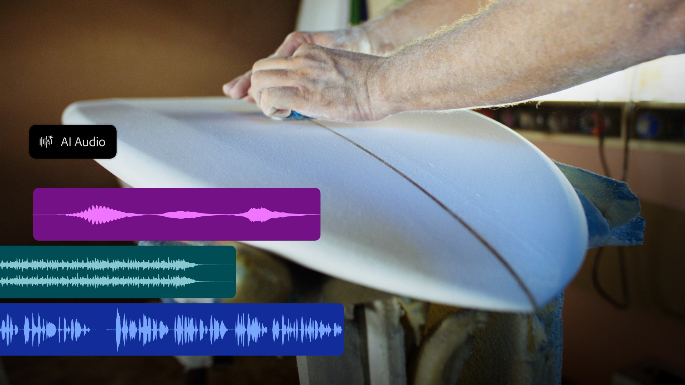
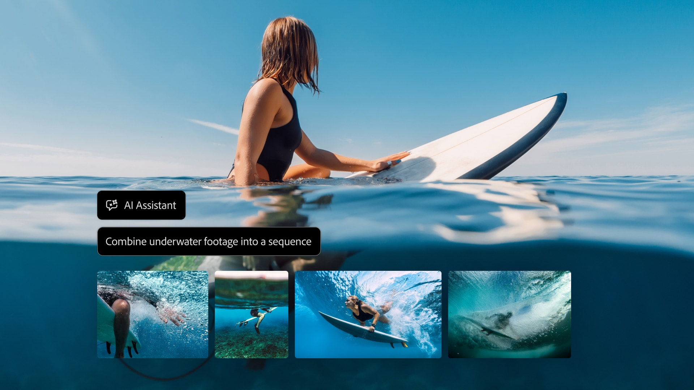
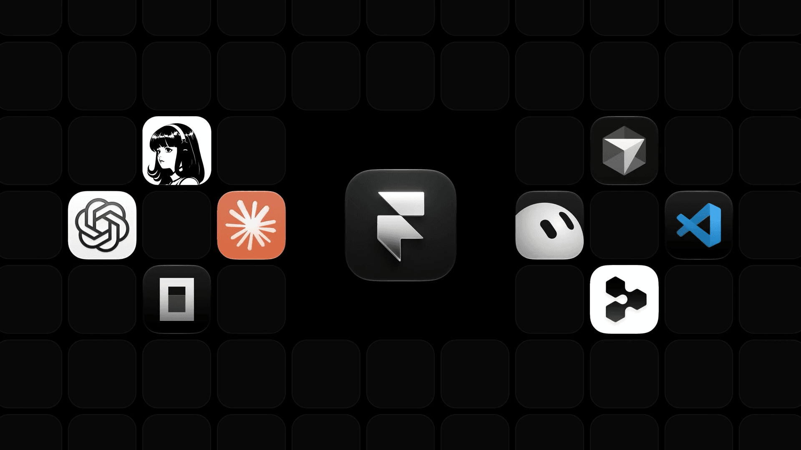
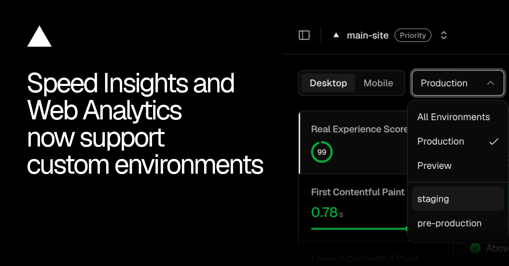

今天真正有分量的不是又多了几个生成按钮，而是动效、图像、版式和发布流程开始长出可复用参数与可回读边界。Figma 把 spring 做成能存进设计系统的变量；Adobe 一口气把画布、节点工作流、桌面应用和本地 MCP 串起来，但大量能力仍在 beta、private beta 或 2027 预告阶段。Framer 与 Vercel 则把权限、分支、环境归因这些“不好看但决定能不能交付”的部分说得更清楚。
这批更新的共同裁决很简单：生成结果如果不能保持图层可编辑、参数可复用、环境可区分、上线可回退，就仍然只是演示。今天不替官方补体验结论；没实测的功能只按发布说明判断，credits、套餐与失败收费没有写清的地方也直接标出来。

Figma Motion 在 11 月 10 日加入动画 style 预览、physics-based springs 与 Lottie 导出前预览。自定义 spring 可调 stiffness、damping 与 mass，并能保存为 variable，复用到设计系统；Figma 文档也把跨端差异写出来了：mass 适用于 iOS / web，Android 只使用 stiffness 与 damping ratio。
这是今天最实在的一条。动效规范终于不必停在“fast / normal / slow”三档 token，也不用把每个弹簧值另抄到交付文档。功能目前仍是 open beta，Starter、Professional、Education、Organization、Enterprise 均可用，但需要文件编辑权限；physics spring 没有固定 duration，时间线和声音强同步时仍应选 time-based spring 或 easing curve。

Adobe 在 MAX 2026 同时公布 Firefly Design beta、Firefly Graph beta 与 Firefly Builder private beta。Design 把 raster、vector、motion、3D、print、协作评审与导出放进一张画布；Graph 用节点把模型与 Adobe 工具编成可共享的重复流程；Builder 则面向交互应用、网站和作品集原型，支持直接编辑与多方向并行探索。
三个名字放在一起看，Adobe 要补的不是“另一个生成器”，而是从概念到交付的工作面。边界也很明确：Builder 还只是 private beta，官方文章没有给出套餐、credits 或失败是否计费，今天不能把它当采购方案。

Photoshop beta 新增 Convert to Text Layers、Generative Recompose、Camera Angles、Mockups、Timelapse 与 Remove Ambient Effect Only；正式更新里还有非破坏 Relight、可把生成结果转成图层的 Generative Restyle、关联元素移除与画布内 before / after slider。
这里最该盯的是“结构是否回来”：扁平图中的字能否变成真正可编辑文字层，扩画幅时人物、产品、留白和文字层级能否继续保持。还没实测，先不下结论；官方这篇总览没有说明字体匹配边界、语言覆盖、credits 与失败扣费。

Premiere 的 Color Mode 已正式可用；Generative Media 把视频、音效、soundscape 与音乐生成放回时间线，并允许在 Firefly、Google、Kling、Runway、Luma 之间选模型。音频侧新增 Enhance Audio、Separate Crosstalk 与 Separate Sound Source，Generative Remove 仍是 beta。
这套组合比“文本生成一段视频”更接近剪辑现场：缺镜头、缺声音、串音和脏物都在原时间线上处理。模型切换会直接牵动许可、风格一致性和 credits，但发布稿没有列明计费表；项目立项前要逐个模型核许可与失败收费，不能把一个下拉菜单理解成同一套商业边界。
InDesign 的 Co-editing 进入 public beta，允许多人实时编辑同一版式；Flex Layout 会随内容变化调整文本框，Check Document 与 Rewrite 则在排版阶段检查编辑与无障碍问题。Illustrator 同期补了常用内容库和带实时预览的 on-canvas Blend controls。
对多语言发布最有用的不是多人光标，而是内容变长后版式能不能稳住。官方没有交代 Flex Layout 的复杂跨栏、脚注、RTL 与锁定对象边界，先拿一份真实中英长短文档做压力测试，再决定是否改模板。

Adobe 预告第三方 agent 可经 MCP 调用 Photoshop、Illustrator、Premiere 与 After Effects。它运行在本机，直接处理 native project files，图层、矢量、bin 与 sequence 保持可编辑；Creative Cloud 桌面端的 AI Assistant beta 也会覆盖 Premiere、Illustrator、InDesign、After Effects 与 Frame.io。
别急着写进本季度路线图：MCP integrations 明确写的是 2027 年初面向 Creative Cloud 客户推出，现在只是 preview。真正决定团队敢不敢用的是权限范围、批处理回滚、外部 connector 数据落盘位置与操作日志；发布稿只确认本地运行和可编辑性，没有给这些治理细节。

Framer 新教程把远程 MCP 的权限与发布边界说清了：agent 继承已授权 Framer 账号的访问权限，可操作 canvas、components、部分 project settings 与 CMS；编辑器不用保持打开，改动默认留在 project 或 branch，只有明确发布才会上线。AI 用量走用户已有 agent 的 plan 或 credits。
这比一句“支持 MCP”有用得多。当前远程 MCP 还不支持 localization，需要继续用本地 @framer/agent CLI；上线前应强制走 branch、diff、人工预览与显式 publish，别让远程连接把“能写”误解成“可以直接发”。

Vercel 现在会把 custom environment 的 Speed Insights 与 Web Analytics 数据归到来源环境，而不是全部塞进 Preview。团队可在 dashboard、vc metrics、query builder 与 Web Analytics Aggregation API 按 staging、QA、canary 等环境查看；这次只改 attribution，不新增采集点，也不需要改配置。
设计 QA 终于可以把“预发布性能变慢”从一团 Preview 噪声里拆出来。限制很硬：custom environments 只在 Pro 与 Enterprise 提供；如果团队仍用一个 Preview 环境承载所有分支，这条更新不会自动替你建立实验分组。
视频：Adobe 官方播放器https://video.tv.adobe.com/v/3508083/｜幕后：Behind the scenes of Adobe’s Made to Create filmhttps://blog.adobe.com/en/publish/2026/11/10/behind-the-scenes-of-adobe-made-to-create-film｜导演：Santiago Carrasquilla｜合作：72andSunny 与 30 多位、来自 18 个国家的创作者
这支 60 秒全球品牌片没有从产品功能开场，而是先用大面积白底、红色命题句和反复复制的 copy. paste. repeat. 建立对“创作模板化”的压力；随后字体从干净排版变成可拉伸、可叠压的物件，真人、手绘、黏土感 3D、拼贴、影像与真实软件界面不断接管画面。中段明显加速，创作者世界与 Photoshop / Premiere / Acrobat 的操作层交叉出现，最后回到克制白底，把品牌口号收住。
片子最聪明的地方是产品 UI 没有被单独剪成 demo。调色、画面编辑、资产拼贴都作为“创作者正在做决定”的一部分进入镜头，2D 字体承担节奏，3D 与实拍负责换世界，场记板和画布框线反复提醒观众这是制作过程，不是无来源的 AI 奇观。幕后资料确认从拍摄到 final edit 不到一个月，Frame.io 管视频资产与版本评论，Acrobat 管静态审批，Workfront 管计划与资源；这部分是 Adobe 自述，不等于独立效率评测。
下一支产品片可以直接借它的结构，但别借表面：先写一句反命题，把 60 秒切成“问题 / 人的选择 / 工具介入 / 世界展开 / 品牌收束”五段；每个软件界面只保留一个能看懂的决定动作，避免连续功能录屏。飞书发布使用 Adobe 官方播放器 URL Preview，不额外堆一张独立封面。
核验说明：Figma Release Notes / Help Center、Adobe MAX 官方发布与播放器、Framer 官方教程、Vercel Changelog、Stash 首页 / WordPress API 与各文章落地页于 2026-11-11 回读。正文 8 张配图原始宽度为 1920–2400px，已逐张目视检查；Adobe 主视频飞书预览以最终 CLI section 回读为准。